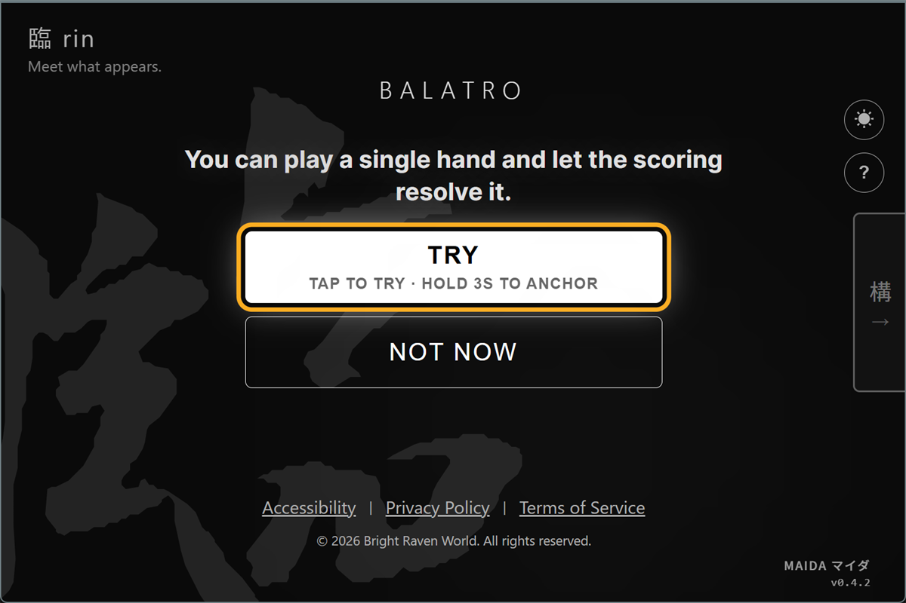
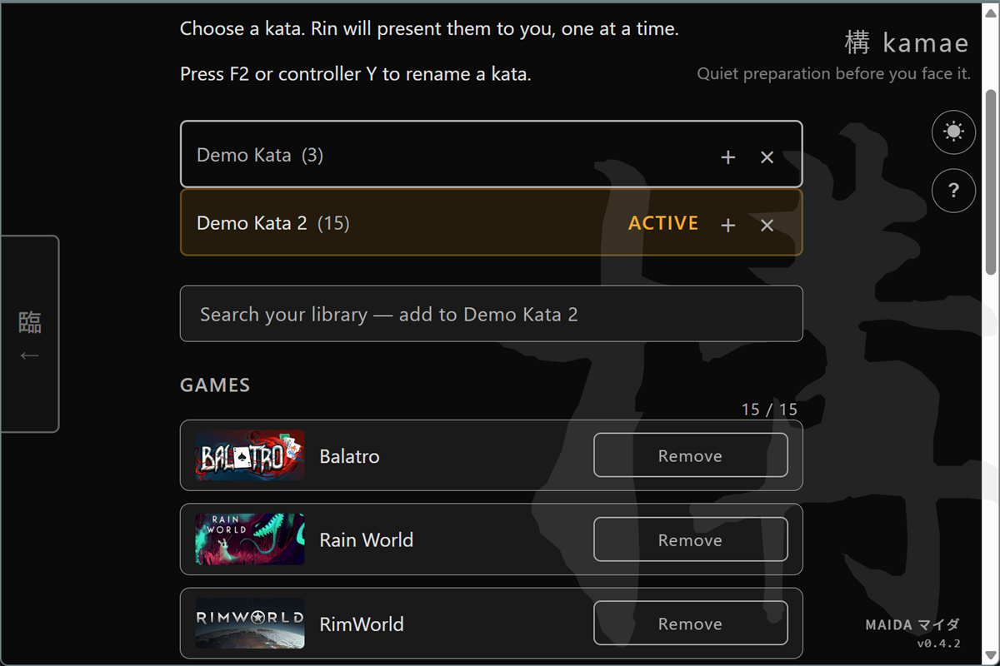
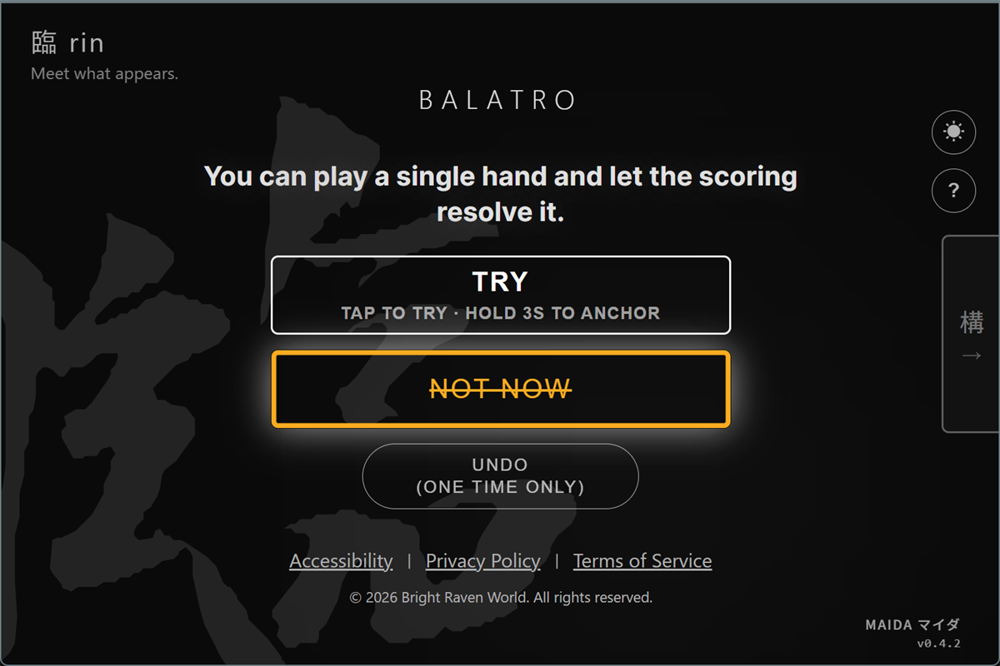

You stared at your library for thirty minutes, then closed it. ライブラリを30分見つめて、閉じた。 你盯著遊戲庫看了三十分鐘，然後把它關掉。 你盯着游戏库看了三十分钟，然后把它关掉。
Steam-first. One installed game at a time. No browsing loop. Steam 起点。インストール済みゲームを一度に一本。ブラウズのループなし。 以 Steam 為起點。一次只呈現一款已安裝遊戲。沒有瀏覽迴圈。 以 Steam 为起点。一次只呈现一款已安装游戏。没有浏览循环。
One game appears from what you already have installed. You decide: play now, or move on. インストール済みの中から一本が現れる。今やるか、次へ進むかは、あなたが決める。 從你已安裝的遊戲裡出現一款。現在玩，或先往下一款，由你決定。 从你已安装的游戏里出现一款。现在玩，或先往下一款，由你决定。

Your time to play shouldn't be stuck with choices. 遊ぶための時間が、選択で潰れるなんておかしい。 留給遊戲的時間，不應該浪費在選擇上。 留给游戏的时间，不应该浪费在选择上。
You own hundreds of games. Tonight you launched the one you've already finished twice. Not because it's the best. Because choosing was harder than playing.何百本もある。今夜また、もうクリアしたあのゲームを起動した。一番だからじゃない。選ぶことのほうが、遊ぶことより疲れるから。你有幾百款遊戲。你今晚又打開了那款已經玩過很多次的。不是因為它最好。是因為選擇本身讓你太累了。你有几百款游戏。今晚你又打开了那款已经通关过的。不是因为它最好。是因为选择本身让你太累了。
This isn't laziness or pickiness. More options doesn't always mean more freedom. Sometimes it just means a longer scroll before you give up.怠けでも、わがままでもありません。選択肢が多いほど自由とは限らない。ただ諦めるまでのスクロールが長くなるだけのこともあります。這不是懶惰，也不是你變挑。選項越多，不一定越自由。有時只是放棄前多滑一段。这不是懒惰，也不是你变挑。选项越多，不一定越自由。有时只是放弃前多滑一段。
Maida removes the library scroll. It leaves one visible option, then gets out of the way.Maida はライブラリを眺め続ける流れを外します。見える選択肢を一本だけ残し、あとは静かに退きます。Maida 移除遊戲庫瀏覽迴圈。畫面只留下眼前這一款，然後安靜退開。Maida 移除游戏库浏览循环。画面只留下眼前这一款，然后安静退开。
A small gate between your library and play. ライブラリとプレイの間にある小さな門。 遊戲庫與開始遊玩之間的一道小門。 游戏库与开始游玩之间的一道小门。
間 (ma) is the space between. Maida is meant to be brief. 間(ま)は、ものごとの間にある余白。Maida は長居する場所ではありません。 「間」(ま) 是事物之間的留白。Maida 應該只是短暫經過的地方。 「间」(ま) 是事物之间的留白。Maida 应该只是短暂经过的地方。
Maida reads your locally installed Steam games and keeps the flow narrow: one visible game, two answers.Maida はローカルにインストールされた Steam ゲームを読み取り、流れを狭く保ちます。見えるゲームは一本、答えは二つ。Maida 讀取本機已安裝的 Steam 遊戲，讓流程保持很窄：畫面上一款遊戲，兩個回答。Maida 读取本机已安装的 Steam 游戏，让流程保持很窄：画面上一款游戏，两个回答。
It's not a recommendation engine. Not a backlog tracker. Not a system that pretends to know you better than you know yourself.レコメンドエンジンじゃない。バックログ管理ツールでもない。あなたより「あなたをわかっている」ふりをするシステムでもない。它不是推薦引擎。不是待辦清單。不是一個假裝比你更懂你的系統。它不是推荐引擎。不是待办清单。不是一个假装比你更懂你的系统。
Three steps. Then the app gets out of the way.三つの手順。そしてアプリは退く。三個步驟。然後 app 退開。三个步骤。然后 app 退开。
Step 1
Scan the Steam games installed on this device.この端末にインストールされた Steam ゲームを読み取ります。掃描這台裝置上已安裝的 Steam 遊戲。扫描这台设备上已安装的 Steam 游戏。
Step 2
Optional: narrow today's pool. Maida calls that a kata.必要なら、今日向き合う範囲を絞ります。Maida ではそれを kata と呼びます。可選：縮小今天要面對的範圍。Maida 稱它為 kata。可选：缩小今天要面对的范围。Maida 称它为 kata。

Step 3
One game appears. No list, no comparison table.一本だけが現れます。リストも比較表もありません。畫面出現一款遊戲。沒有清單，沒有比較表。画面出现一款游戏。没有清单，没有比较表。
Step 4
TRY opens it. Not Now moves on. Hold only when you mean to anchor.TRY で開く。Not Now で次へ。アンカーするときだけ、意図して長押しします。TRY 會開啟遊戲。Not Now 會往下一款。只有要 anchor 時才刻意長按。TRY 会打开游戏。Not Now 会往下一款。只有要 anchor 时才刻意长按。

What it won't do matters as much as what it does.やらないことは、やることと同じだけ重い。它刻意不做的事，和它做的事一樣重要。它刻意不做的事，和它做的事一样重要。
No recommendations レコメンドなし 沒有推薦 没有推荐
The game you see is one you already own. Nothing "trending", nothing "suggested for you". 表示されるのはあなたが既に所有しているゲームだけ。「人気」も「おすすめ」もありません。 出現的遊戲是你本來就擁有的。沒有「熱門」，沒有「你可能喜歡」。 出现的游戏是你本来就拥有的。没有「热门」，没有「你可能喜欢」。
No gameplay tracking プレイ追跡なし 沒有遊玩追蹤 没有游玩追踪
Maida does not track playtime or upload your library. TRY / NOT NOW choices stay on your device. Maida はプレイ時間を追跡せず、ライブラリもアップロードしません。TRY / NOT NOW の選択は端末内に留まります。 Maida 不追蹤遊玩時間，也不上傳你的遊戲庫。TRY / NOT NOW 的選擇只留在你的裝置上。 Maida 不追踪游玩时间，也不上传你的游戏库。TRY / NOT NOW 的选择只留在你的设备上。
No streaks, no achievements ストリークなし、実績なし 沒有連續登入，沒有成就 没有连续登录，没有成就
Nothing you can lose by not opening the app. 開かなかったことで失うものはありません。 沒有不開就會扣的分數。 没有不开就会扣的分数。
No notifications 通知なし 沒有通知 没有通知
Nothing calling you back. 呼び戻すものはありません。 沒有叫你回來的東西。 没有叫你回来的东西。
One anonymous ping on launch carries three fields: a random ID, days since install, and app version. Nothing else. Full details in the Privacy Policy.起動時の匿名 ping は 3 フィールドだけ：ランダム ID、インストール経過日数、アプリバージョン。それ以外は送られません。詳細はプライバシーポリシーに。啟動時會送一個匿名 ping，只有三個欄位：隨機 ID、安裝天數、應用版本。沒別的。完整說明在隱私政策。启动时会送一个匿名 ping，只有三个字段：随机 ID、安装天数、应用版本。没别的。完整说明在隐私政策。
Maida shouldn't become a habit. Less time here, more time playing — that's the whole design.Maida は習慣になってはいけません。ここで過ごす時間を減らし、遊ぶ時間を増やす ― それだけが目的です。Maida 不該變成你的習慣。在這裡花越少時間、玩遊戲花越多時間 ─ 這就是全部的設計目的。Maida 不该变成你的习惯。在这里花越少时间、玩游戏花越多时间 ─ 这就是全部的设计目的。
For everyone who finds starting harder than playing. 遊ぶより「始める」ほうが重い、そんなあなたへ。 給每個覺得「開始」比玩還累的人。 给每个觉得「开始」比玩还累的人。
- Screen reader announcements cover TRY, NOT NOW, and ANCHOR state changes. Primary target: NVDA on Windows. Orca on Linux: partial support. TRY、NOT NOW、アンカーの状態変化はスクリーンリーダーで読み上げられます。主な対象：Windows の NVDA。Linux の Orca は部分対応。 TRY、NOT NOW、ANCHOR 的狀態變化會透過螢幕閱讀器朗讀。主要測試對象：Windows 的 NVDA。Linux 的 Orca 部分支援。 TRY、NOT NOW、ANCHOR 的状态变化会通过屏幕阅读器朗读。主要测试对象：Windows 的 NVDA。Linux 的 Orca 部分支持。
- Keyboard, D-pad, and stick navigation are supported across the main flow. キーボード、D-pad、スティックで主要な流れを操作できます。 主要流程支援鍵盤、D-pad 與搖桿操作。 主要流程支持键盘、D-pad 与摇杆操作。
- Anchoring uses a deliberate hold instead of a stray tap. アンカーは、うっかりタップではなく意図的な長押しで行います。 Anchor 需要刻意長按，不會因為隨手一點就發生。 Anchor 需要刻意长按，不会因为随手一点就发生。
- Motion follows your operating system's reduced-motion setting. 動きの量は OS の「動きを減らす」設定に従います。 動態效果會跟隨作業系統的「減少動態效果」設定。 动态效果会跟随操作系统的「减少动态效果」设置。
Full accessibility statement → 完全なアクセシビリティ声明 → 完整無障礙聲明 → 完整无障碍声明 →
Tonight, don't just stare at the library.今夜は、ライブラリを眺めるだけで終わらせない。今晚別再盯著庫看了。今晚别再盯着库看了。
Free. No account. Windows + Linux. Handheld-friendly.無料。アカウント不要。Windows + Linux。ハンドヘルド対応。免費。不需要帳號。Windows / Linux。手持裝置友善。免费。不需要账号。Windows / Linux。掌机友好。
Download from GitHubGitHub からダウンロード從 GitHub 下載从 GitHub 下载